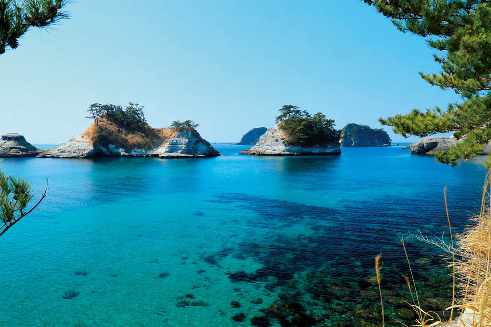
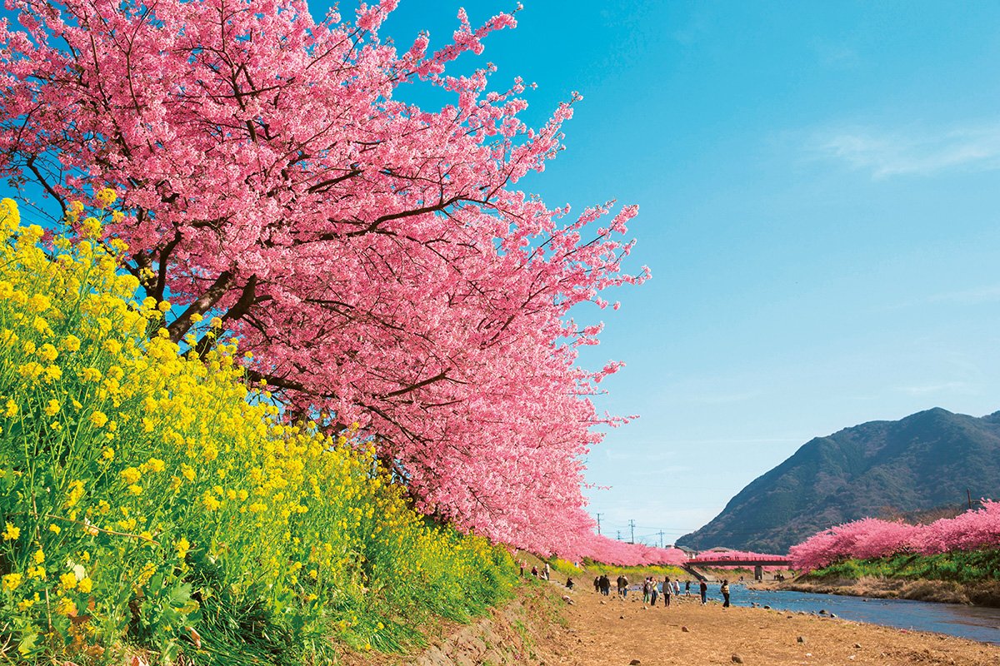
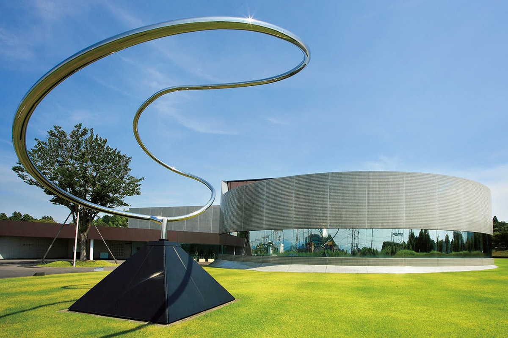
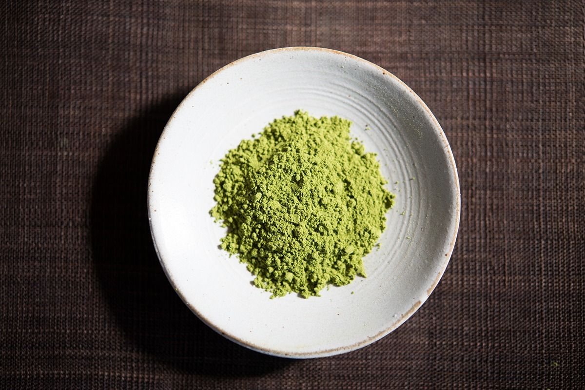
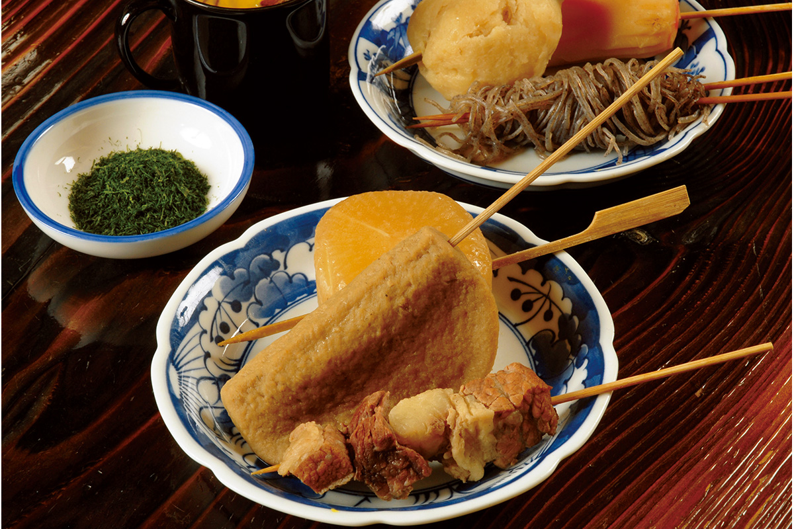
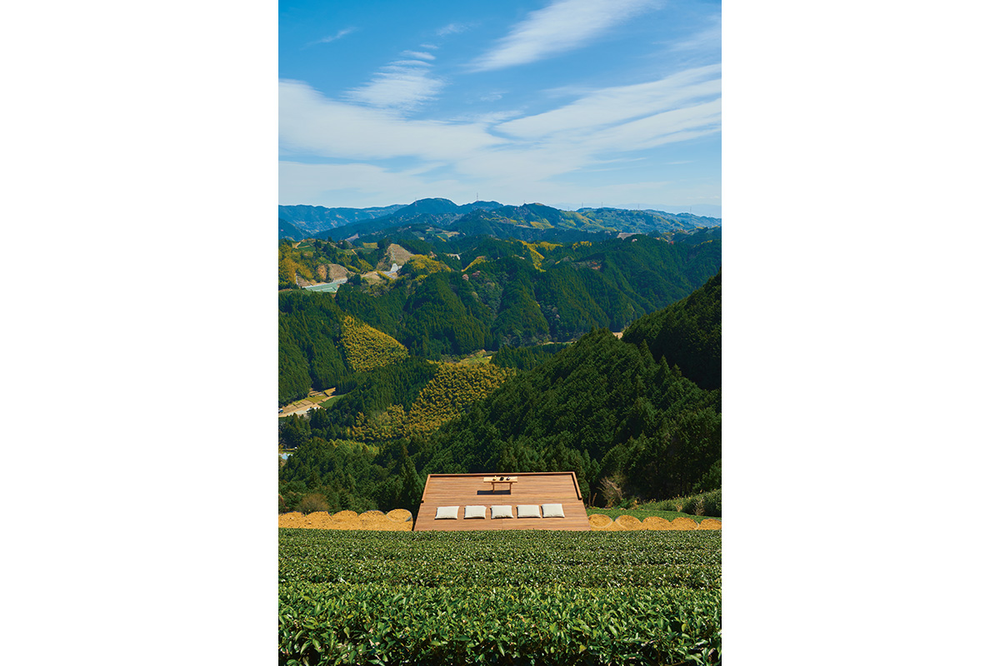
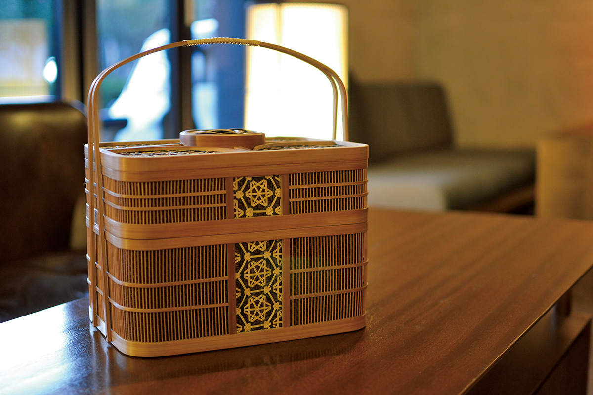
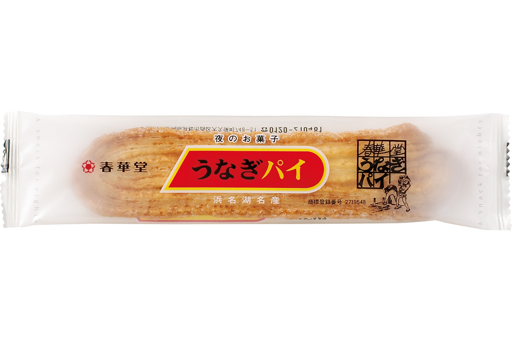
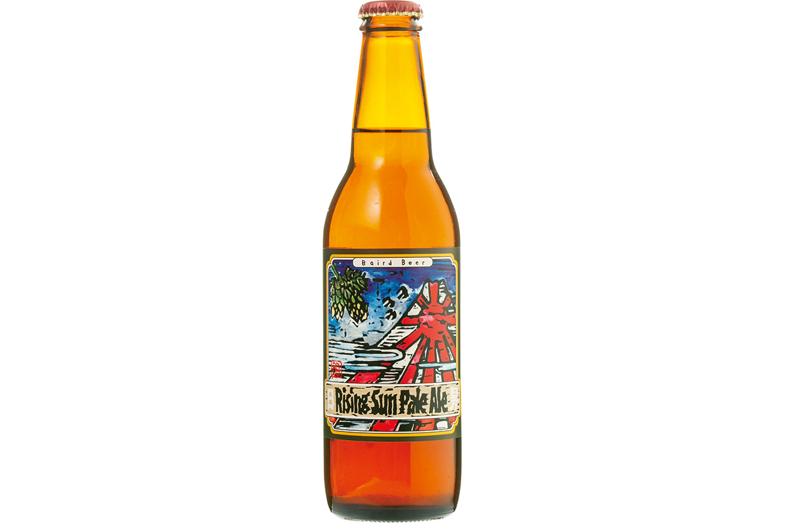

Префектура Сидзуока
Сидзуока: чайные склоны, чёрный одэн и закат над заливом Суруга

Скалы из белого туфа и сосны поднимаются из синей воды залива, над ними чистое небо.
Край, где Фудзи поднимается над рядами чайного куста, а море огибает скалы из белого туфа. Разбираем, за чем ехать в Сидзуоку: от чёрного одэна до чайной комнаты на высоте 350 метров.
Карта: 57 мест из 30 статей · все статьи о префектуре Сидзуока
Карта
Сидзуока на карте
57 мест из наших статей о префектуре Сидзуока: рёканы Атами и Идзу, Сюдзэндзи, Западный Идзу, город Сидзуока и его кухня, театр SPAC, чай Рёгоути и Макинохары, железная дорога Oigawa, глубоководная рыба Нумадзу, святилище у подножия Фудзи. Нажмите на точку, чтобы открыть статью.
Пунктирный круг означает, что точка примерная: место находится в этом районе или на этом острове.
О префектуре
Три старые области у подножия Фудзи
Сидзуока собрана из трёх прежних областей, Идзу, Суруга и Тотоуми, потому её природа так разнообразна: берега Энсюнада, Суруга и Сагами, горы высотой до трёх тысяч метров, река Тэнрю и озеро Хамана.
Землёй поочерёдно владели два влиятельных военных рода, Ходзё и Имагава, а затем её держал Токугава Иэясу (1543–1616), первый сёгун и основатель династии Токугава. В эпоху Эдо через эти места шёл тракт Токайдо с двадцатью двумя станциями, и каждая станция обросла своим городком со дворами и складами.
В 1869 году Сумпу-хан сменил имя на Сидзуока-хан, а в 1876 году три части, Сидзуока, Хамамацу и Асигара, соединились в нынешнюю префектуру. Имя ей дала гора Сидзухата в центре равнины Сидзуока. Сегодня это главный чайный край страны.
Что посмотреть
Скалы, сложенные морем
Скалы Догасима
Западный берег Идзу упирается в скалы Догасима: синяя вода, белые утёсы из мягкого туфа, поросшие соснами, и закат, который опускается прямо в залив Суруга. Место числят первым по красоте на всём западном берегу Идзу.
- Справки
- ассоциация туризма посёлка Нисиидзу
- Телефон
- +81 558-52-1268
Что ещё посмотреть
- Белые водопады Сираито, вода падает тонкими струями со скалы
- Станция Окуои-коидзё, платформа посреди водохранилища
- Железная дорога Оигава, поезда вдоль ущелья реки
Праздники
Месяц сакуры у реки
Фестиваль сакуры в Кавадзу
Вдоль реки Кавадзу растёт около 850 деревьев ранней сакуры, и с начала февраля здесь почти месяц идёт праздник. Днём тянутся ряды цветущих деревьев, вечером включают подсветку и открывают палатки с едой.

- Период
- с февраля по март
- Место
- вдоль реки Кавадзу, посёлок Кавадзу, уезд Камо
Другие праздники
- Праздник подвесных украшений, куклы и украшения к празднику девочек
- Праздник в Хамамацу, сражение воздушных змеев
- Огненный праздник Догасима, зимний обряд с огнями на берегу
Музеи и архитектура
Дом искусств над газоном
Дом искусств Сисеидо
Дом открылся в 1978 году и показывает современные картины, скульптуру и ремесленные работы, которые прежде выставлялись в галерее Сисеидо в токийской Гиндзе. Здание решено в духе модернизма, и ради одной архитектуры сюда приезжают отдельно.

- Адрес
- 751-1 Shimohata, Kakegawa, Shizuoka
- Телефон
- +81 537-23-6122
Что ещё посмотреть
- Музей MOA, собрание восточного искусства над морем
- Святилище Куно-дзан Тосёгу, резные ворота на склоне горы
- Дом Киункаку, вилла с садом и ванной из камня
Местная кухня
Чай и почти чёрный бульон
Чай из Сидзуоки
Префектура держит первое место по производству чая, и здесь его пьют по-разному: от листового до порошкового, который заваривают прямо в чашке, без сита. Плантации занимают склоны, и среди них открывают чайные комнаты с видом на Фудзи и залив Суруга.

Что ещё попробовать
- Угорь кабаяки, жареный угорь под густым сладким соусом
- Якисоба из Фудзиномия, лапша с порошком сушёной иваси
- Какиагэ с креветками, жареная лепёшка с креветками сакураэби
Одэн по-сидзуокски
Одэн здесь варят в почти чёрном бульоне: основу дают говяжьи сухожилия, а цвет и вкус задаёт соевый соус. Перед подачей блюдо посыпают порошком сушёного тунца и зелёными водорослями, поэтому вкус получается плотным и тёмным.

Где поесть
Чайная посреди плантации
Небесная чайная
Посреди чайных рядов на высоте 350 метров поставили чайную комнату, где подают свежезаваренный японский чай. Отсюда видны Фудзи и залив Суруга, а ранним утром иногда расстилается море облаков. Визит по предварительной записи.

- Адрес
- 270 Nunozawa, Shimizu-ku, Shizuoka
- Телефон
- +81 54-251-5937
- Часы
- сеансы в 10:00, 12:15 и 14:30, длительность 90 минут
- Бронирование
- не позднее чем за три дня
- Выходные
- в дождливую погоду
Ремёсла
Тонкий бамбук Суруга
Плетение из бамбука Суруга
Плетение из тонкого бамбука появилось в начале эпохи Эдо как подработка самураев, а сегодня это традиционный промысел. Мастера используют цвет и структуру стебля, поэтому вазы и посуда для сладостей получаются лёгкими и тонкими, и их охотно покупают за границей.

- Справки
- кооператив бамбуковых ремёсел Сидзуоки
- Телефон
- +81 54-252-4924
- Сайт
- takesensuji.jp
Что привезти
Сладость с угрём и пиво залива
Унаги-пай от Сюнкадо
Сладость появилась в 1961 году: в тесто добавляют порошок угря, а печёт его мастер вручную, поэтому коржи получаются слоистыми и хрупкими. Коробка из двенадцати штук стоит 962 иены.

- Телефон
- 0120-210-481
- Сайт
- shunkado.co.jp
Пиво Suruga Bay Imperial IPA
Пивоварня Baird варит этот сорт к заливу Суруга: у напитка мягкое начало и яркий хмелевой аромат с заметной горчинкой. Бутылка объёмом 330 миллилитров стоит 500 иен.

- Телефон
- +81 558-73-1225
- Сайт
- bairdbeer.com/ja
Где остановиться
Двадцать шесть комнат у моря
Атами Фуфу
Гостиница стоит в Атами и держит собственный источник: вода идёт в открытые купели прямо из скважины. Комнаты здесь просторные, а к ужину подают рыбу и зелень с гор вокруг Атами.
- Адрес
- 11-48 Minaguchi-cho, Atami, Shizuoka
- Телефон
- +81 557-86-3646
- Комнат
- 26
- Цена
- от 42 350 иен за ночь с двумя приёмами пищи на человека при двухместном размещении, налоги и сборы включены
- Сайт
- atamifufu.jp
Местный диалект
Как здесь говорят «очень вкусно»
- бакаумайраочень вкусно
- касабута ва кадзиття дамэцарапины расчёсывать нельзя
- ко:ра но кага нукэтаиз колы вышел газ
- соно гоми, уттятоитээтот мусор выброси
Рекорды
В чём Сидзуока первая
- №1 производство чая: первое место в стране
- №1 число гостиниц с горячими источниками: первое место
- №1 производство пианино: первое место
Вопросы и ответы
Что ещё спрашивают о Сидзуоке
Какая еда из Сидзуоки открыла моду на местную уличную кухню?
Якисоба из Фудзиномия. Это блюдо города Фудзиномия, где упругую лапшу посыпают порошком сушёной иваси, и на первом и втором конкурсе местной уличной кухни оно занимало первое место.
Какая безлюдная станция стоит на мысу посреди озера?
Окуои-коидзё на железной дороге Оигава. Она появилась вместе со строительством плотины Нагасима и стоит на левом берегу водохранилища, а по мосту через воду проложена прогулочная дорожка.
Справочник
Сидзуока в цифрах
Общие сведения
| Административный центр | Сидзуока |
| Муниципалитеты | 23 города, 14 посёлков |
| Площадь | 7777 кв. км |
| Население | 3,66 млн человек |
| Плотность населения | 470,5 человека на кв. км |
| Туристов в год | 153,42 млн |
| Дерево префектуры | османтус |
| Цветок префектуры | рододендрон |
| Птица префектуры | длиннохвостая синица |
Климат
| Средняя температура | +17,7 |
| Максимум | +32,7 |
| Минимум | +1,3 |
| Осадки | 2442 мм |
| Ясных дней | 64 |
| Дождливых дней | 106 |
| Снежных дней | 2 |
Для путешественника
| Онсэнов | 117 |
| Гостиниц и рёканов | 2928 |
| Музеев искусств | 27 |
| Музеев | 27 |
| Митиноэки, придорожных станций | 25 |
| Национальное сокровище | ширма «Красные и белые сливы» кисти Огаты Корина в музее MOA |
| Важных культурных ценностей | 254, из них 11 национальных сокровищ |
| Исторических мест | 45 |
| Живописных мест | 11 |
| Природных памятников | 31 |
| Всемирное наследие | Фудзи, отражательная печь в Нираяме |
| Национальные парки | Фудзи-Хаконэ-Идзу, Тэнрю-Окумикава и ещё два |
Природные памятники
- Сакура в Кариядо, старое дерево у дороги на Токайдо
- Османтус святилища Мисима, ароматное дерево у святилища
- Ямамомо храма Рэнтякудзи, восковница во дворе храма
- Парк Ракудзюэн, старый сад с прудом у подножия Фудзи
Наши статьи
Все статьи о префектуре Сидзуока
Атами
Сюдзэндзи, Ито и Кавадзу
- Asaba в Сюдзэндзи: рёкан с пятивековой историей, сценой но над прудом и завтраком, который помнят годами
- Ochiairo: рёкан-памятник на Идзу, где сауну строят как чайный домик и прячут в пещеру
- Обержа «Ханагоёми» в Ито: два номера, кипарисовая купель и кухня трёх поколений
- ABBA RESORTS IZU Zagyoso: французский ужин, к которому вместо вина подают чай из Сидзуоки
- Сюдзэндзи: онсэн на Идзу, где разворачивается пьеса кабуки «Сюдзэндзи моногатари»
- Мост-петля Кавадзу Нанадару: двойная спираль среди гор Идзу
Западный и южный Идзу
- SANPOUEN на онсэне Сакурада: свежий источник прямо из-под земли и бассейн глубиной в метр
- Izu Cliff House: стеклянный дом 1960-х на скале над Тихим океаном
- WEAZER Nishi-Izu: вилла над заливом Суруга, которая живёт только на энергии солнца и дождя
- QUEBICO в Мацудзаки: ресторан на западе Идзу, где всё готовят на дровах из местного леса
Город Сидзуока
- Два дня по «наследию Сидзуоки»: Фудзи с холма Нихондайра, вечер в городе и паром на Западный Идзу
- Сумпу за один день: лаковые палочки, тороро-дзиру с 1596 года, васаби и ужин в резиденции сёгуна
- «Абэкава моти» дома «Ямадаити»: сладость с Токайдо рядом с музеем Сэридзавы
- KAWASAKI в Сидзуоке: шеф, который сам охотится на дичь для своего меню
- Тэмпура «Нарусэ» в Сидзуоке: рыба залива Суруга в самом тонком кляре
- SPAC: театр под открытым небом у Нихондайры и первая государственная труппа Японии
- Художественный музей префектуры Сидзуока: Роден под стеклянным куполом у подножия Нихондайры
- Houkouen: золотистая ходзитя одного сорта и выдержанный чай с плантации над облаками
- West Coast Brewing: пиво Западного побережья США в рыбацкой гавани Сидзуоки и отель с краном в номере
Нумадзу, Фудзи и Готэмба
Оигава, Яидзу, Хамамацу
- Железная дорога Oigawa: паровозы и единственная в Японии зубчатая линия Abt
- SWEETS BANK в Хамамацу: кондитерская, кафе и банк под столом в тринадцать раз больше обычного
- «Мацуба» в Яидзу: татами-мастерская за стеклом, лавка с изделиями из игусы и сладости с травяной пудрой
- Дорога через чайные поля Макинохары: зелёный ковёр до самой Фудзи